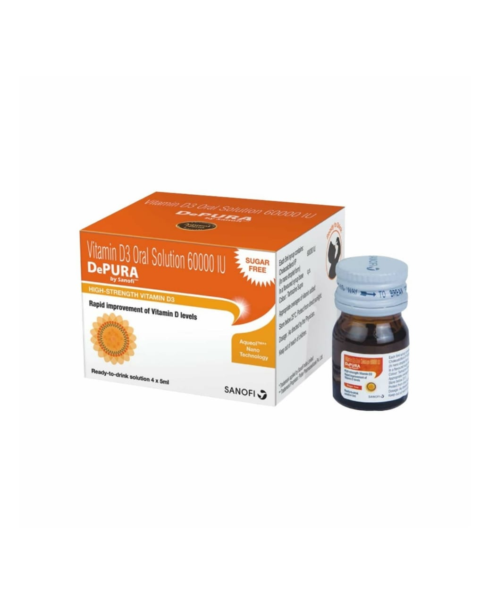

 |
Description:DEPURA 60K contains active ingredient called Cholecalciferol (vitamin D3), which help the body to absorb calcium. Side effects: Like all medicines, this medicine can cause side effects, although not everybody gets them Allergic reaction Too much calcium in your blood or urine marked by loss of appetite,stomach ache ,constipation,drowsiness or confusion Direction for use: 1.Always take this medicine exactly as your doctor has told you 2.If you take more DEPURA 60K If you take more DEPURA 60K, you should contact your doctor immediately If you forget to take a dose, take it as soon as you remember it. However, if it is almost time for your next dose, skip the missed dose and continue as usual Do not take a double dose to make up for a forgotten dose If you stop taking DEPURA 60K Storage instructions: Keep out of the reach of children Do not use after expiry date Store at room temperature 15ºC to 25ºC |